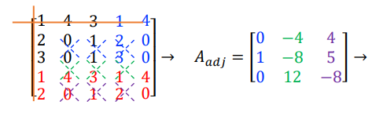

Matrizes Inversas
Uma matriz inversa de uma matriz A de ordem n é a matriz que, quando multiplicada pela matriz A, é resultado em uma matriz identidade I de ordem n.
Matriz Inversa 2x2
Vamos calcular a matriz inversa de uma matriz de ordem 2:
| 2 | 3 |
| 1 | 4 |
Primeiramente, vamos pegar o determinante da matriz (usaremos depois): 2 * 4 - 3 = 5
Nota: Caso o determinante seja 0, não existe matriz inversa para a matriz.
Agora, temos que trocar os elementos da diagonal principal:
| 4 | 3 |
| 1 | 2 |
Depois disso, precisamos trocar de sinal os elementos da diagonal secundária:
| 4 | -3 |
| -1 | 2 |
E por fim, colocar todos os valores da matriz sobre o determinante:
| 4/5 | -3/5 |
| -1/5 | 2/5 |
Ao multiplicar essa matriz pela matriz original temos uma matriz identidade:
| 1 | 0 |
| 0 | 1 |
Matriz Inversa 3x3
Agora, com uma matriz inversa 3x3, na qual é um pouco mais complicado:
| 1 | 4 | 3 |
| 2 | 0 | 1 |
| 3 | 0 | 1 |
Primeiramente, precisamos do determinante, e caso ele seja 0, não existe uma matriz inversa:
1 * 0 * 1 + 4 * 1 * 3 + 3 * 2 * 0 - 3 * 0 * 3 - 1 * 0 * 1 - 1 * 4 * 2 =
12 - 8 = 4
Agora, precisamos repetir as primeiras linhas e colunas da matriz, formando uma matriz 5x5:
| 1 | 4 | 3 | 1 | 4 |
| 2 | 0 | 1 | 2 | 0 |
| 3 | 0 | 1 | 3 | 0 |
| 1 | 4 | 3 | 1 | 4 |
| 2 | 0 | 1 | 2 | 0 |
Após isso, cancelamos a primeira linha e coluna:
| 0 | 1 | 2 | 0 |
| 0 | 1 | 3 | 0 |
| 4 | 3 | 1 | 4 |
| 0 | 1 | 2 | 0 |
Agora, precisamos fazer determinantes de 2x2 dentro da matriz e colocar em outra matriz 3x3, mas trocando as linhas com colunas, conforme o desenho.
 Fonte: Arquivo da professoraE, agora que temos essa nova matriz, basta dividir tudo pelo determinante:
| 0/4 | -4/4 | 4/4 |
| 1/4 | -8/4 | 5/4 |
| 0/4 | 12/4 | -8/4 |
Simplificando...
| 0 | -1 | 1 |
| 1/4 | -2 | 5/4 |
| 0 | 3 | -2 |
E com isso, temos a matriz inversa, que quando multiplicada pela matriz, dá uma matriz identidade:
| 1 | 0 | 0 |
| 0 | 1 | 0 |
| 0 | 0 | 1 |